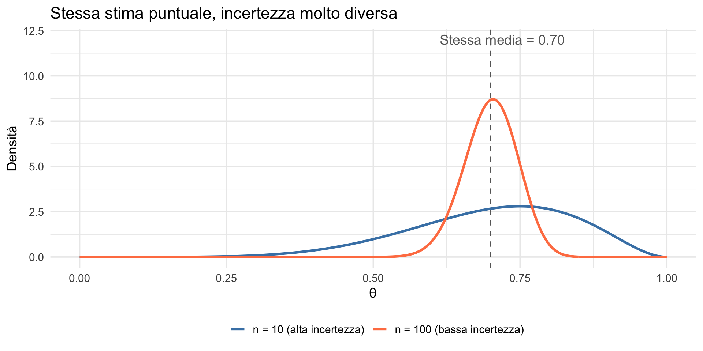
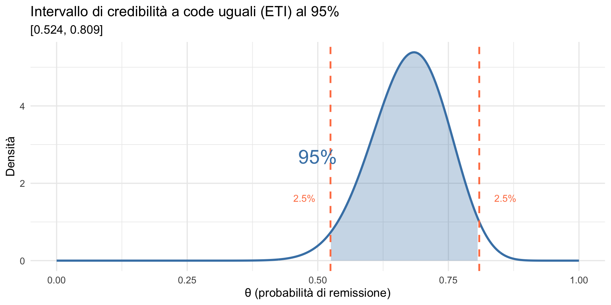
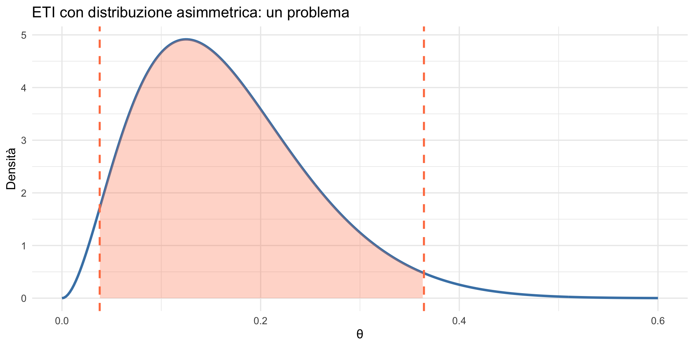
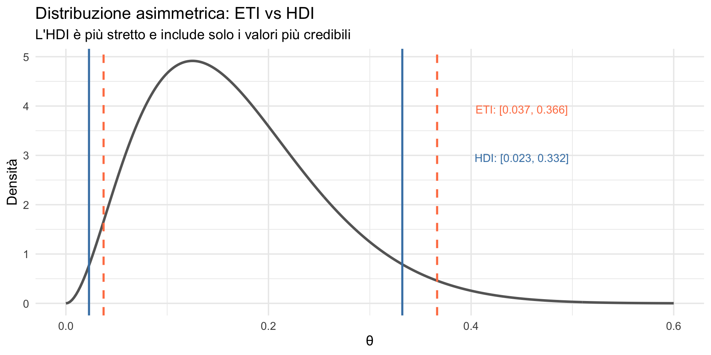
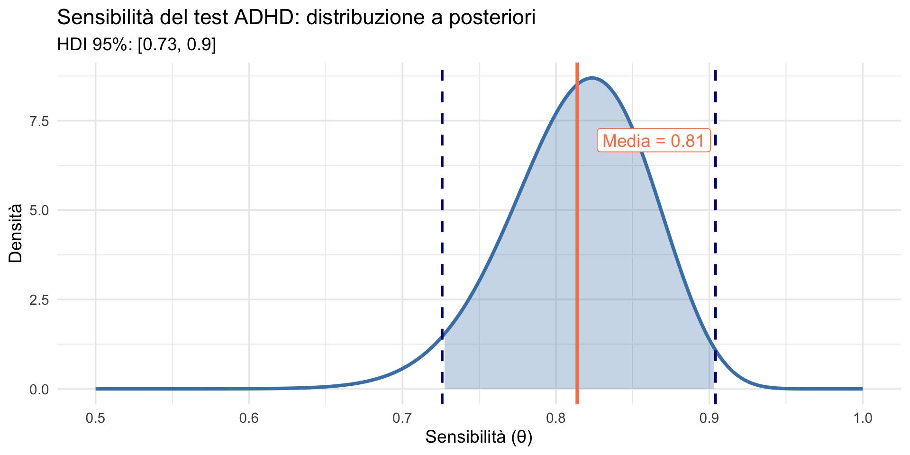
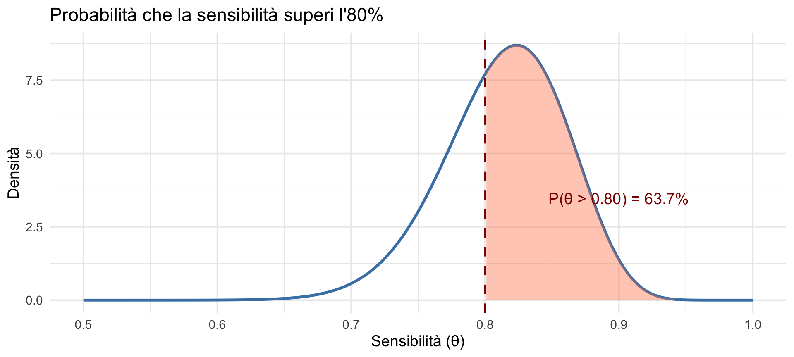
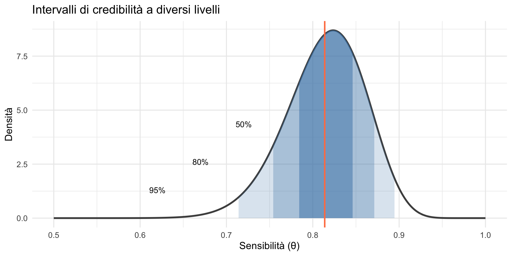
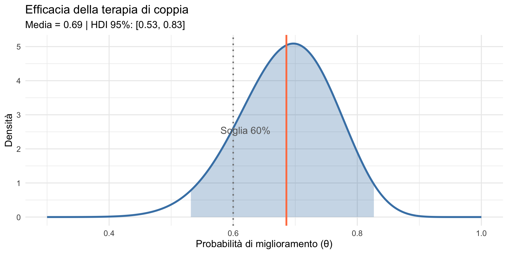

![]()
ETI 95%: [ 0.524 , 0.809 ]Sintesi della distribuzione a posteriori
Intervalli di credibilità — Segmento 2
29 ottobre 2026
Obiettivi
- Comprendere il concetto di intervallo di credibilità.
- Distinguere tra intervallo a code uguali (ETI) e intervallo a densità più alta (HDI).
- Interpretare correttamente gli intervalli di credibilità.
- Rispondere a domande probabilistiche usando la distribuzione a posteriori.
Parte 1: oltre la stima puntuale
Il limite delle stime puntuali
Nel segmento precedente abbiamo visto come riassumere la distribuzione a posteriori con un singolo numero (media, mediana e MAP).
Ma una stima puntuale nasconde l’incertezza.
Dire “la probabilità di remissione è 0.68” non comunica se siamo molto certi (distribuzione stretta) o molto incerti (distribuzione ampia).
Due scenari, stessa stima puntuale

L’intervallo di credibilità
Un intervallo di credibilità è un intervallo \([a,b]\) che contiene una certa percentuale della massa della distribuzione a posteriori di \(\theta\).
Formalmente:
\[ P(\theta \in [a,b] \mid \text{dati}) = 1 - \alpha, \] dove:
- \(1 - \alpha\) è il livello di credibilità,
- \(\alpha\) è la probabilità lasciata fuori dall’intervallo (massa totale nelle code).
Esempio
Se \(\alpha = 0.05\):
\[ P(\theta \in [a,b] \mid \text{dati}) = 0.95. \]
Un intervallo di credibilità al 95% contiene il 95% della massa a posteriori, lasciando il 5% fuori.
Un’interpretazione intuitiva
“C’è una probabilità del 95% che il parametro sia compreso tra \(a\) e \(b\).”
Questa è l’interpretazione corretta di un intervallo di credibilità bayesiano. Ricordate la Lezione 14: per l’intervallo di confidenza frequentista questa affermazione è scorretta — l’IC descrive una proprietà della procedura, non del parametro. L’intervallo di credibilità bayesiano, invece, è una probabilità diretta su \(\theta\).
Questa differenza non è una sottigliezza tecnica. È la ragione per cui l’approccio bayesiano produce risposte più naturali alle domande cliniche.
Significato dei simboli
Nell’espressione \(P(\theta \in [a, b] \mid \text{dati}) = 1 - \alpha\), ogni simbolo ha un ruolo preciso:
- \(\theta\): il parametro di interesse (es. una probabilità o una media);
- \([a, b]\): l’intervallo di credibilità, cioè l’insieme dei valori plausibili di \(\theta\);
- \(\text{dati}\): le osservazioni effettivamente raccolte;
- \(P(\,\cdot \mid \text{dati})\): una probabilità a posteriori, che riflette ciò che crediamo dopo aver osservato i dati;
- \(1 - \alpha\): il livello di credibilità (ad es. \(0.95\) per un intervallo al 95%).
Parte 2: due tipi di intervalli
Intervallo a code uguali (ETI)
L’Equal-Tailed Interval (ETI) lascia la stessa quantità di massa in ciascuna coda.
Per un intervallo al 95%:
- 2.5% della massa è sotto il limite inferiore,
- 2.5% della massa è sopra il limite superiore.
\[ \text{ETI}_{95\%} = [q_{0.025}, q_{0.975}]. \]
Calcolare l’ETI
Riprendiamo l’esempio CBT: Beta(27, 13).
Visualizziamo l’ETI

Il problema con l’ETI
Con distribuzioni fortemente asimmetriche, l’ETI può escludere valori molto credibili e includere valori poco credibili.

Intervallo a densità più alta (HDI)
L’Highest Density Interval (HDI) è l’intervallo che contiene la quota \(1-\alpha\) di probabilità a posteriori concentrata nelle regioni di maggiore densità.
In altre parole, raccoglie i valori del parametro che sono più supportati dai dati, secondo la distribuzione a posteriori.
Proprietà fondamentali
- Ogni punto all’interno dell’HDI ha densità a posteriori maggiore o uguale a quella di qualsiasi punto esterno.
- Tra tutti gli intervalli che contengono la stessa probabilità (es. 95%), l’HDI è quello di ampiezza minima.
- Può non essere simmetrico rispetto alla media o alla mediana.
Perché è utile?
L’HDI è particolarmente informativo quando la distribuzione a posteriori è asimmetrica o non normale, perché si concentra nelle regioni dove la massa di probabilità è effettivamente più densa.
Calcolare l’HDI
Per calcolare l’HDI servono metodi numerici. Con i campioni MCMC:
# Funzione per calcolare l'HDI dai campioni
calcola_hdi <- function(campioni, prob = 0.95) {
campioni_ordinati <- sort(campioni)
n <- length(campioni)
n_inclusi <- ceiling(prob * n)
# Trova l'intervallo più stretto che contiene n_inclusi valori
ampiezze <- campioni_ordinati[(n_inclusi + 1):n] - campioni_ordinati[1:(n - n_inclusi)]
idx_min <- which.min(ampiezze)
c(lower = campioni_ordinati[idx_min],
upper = campioni_ordinati[idx_min + n_inclusi])
}Confronto ETI vs HDI
Distribuzione quasi simmetrica Beta(27, 13):ETI 95%: [ 0.524 , 0.809 ]HDI 95%: [ 0.528 , 0.814 ]Differenza minima!Con distribuzioni simmetriche, ETI e HDI sono praticamente identici.
Quando ETI e HDI differiscono

Quale intervallo scegliere?
| Situazione | Intervallo consigliato |
|---|---|
| Distribuzione simmetrica | ETI (più semplice da calcolare) |
| Distribuzione asimmetrica | HDI (più informativo) |
| Comunicazione con non-esperti | ETI (più facile da spiegare) |
| Precisione massima | HDI |
In pratica, con distribuzioni approssimativamente simmetriche, la scelta conta poco.
Parte 3: applicazione clinica
Scenario: test diagnostico per ADHD
Un nuovo test psicologico per l’ADHD viene validato. Vogliamo stimare la sua sensibilità (probabilità di identificare correttamente chi ha ADHD).
Dati:
- 50 bambini con diagnosi clinica di ADHD,
- il test risulta positivo per 42 di loro.
Prior: test simili hanno sensibilità tra 0.75 e 0.95.
Setup del modello
Calcolo delle statistiche riassuntive
Sensibilità stimata:
Visualizzazione completa

Comunicare i risultati
“Il test ha una sensibilità stimata dell’81%. Con probabilità a posteriori del 95%, la vera sensibilità del test è compresa nell’intervallo HDI 95%: 73% - 90%.”
Parte 4: domande probabilistiche
Oltre gli intervalli: calcolare probabilità
La distribuzione a posteriori permette di rispondere a qualsiasi domanda probabilistica sul parametro.
Esempi:
- Qual è la probabilità che la sensibilità sia > 80%?
- Qual è la probabilità che sia tra 75% e 85%?
- Qual è la probabilità che sia inferiore allo standard clinico del 70%?
Rispondere con i campioni
P(sensibilità > 0.80):
P(sensibilità > 80%) = 63.7 %P(sensibilità tra 0.75 e 0.85):
Interpretazione clinica
Possiamo ora fare affermazioni clinicamente rilevanti:
“C’è una probabilità del 91% che la sensibilità del test superi lo standard clinico del 75%.”
“La probabilità che il test sia inadeguato (sensibilità < 70%) è solo del 1.3%.”
Queste sono affermazioni probabilistiche dirette — non risultati di test indiretti.
Visualizzare le probabilità

Parte 5: confronto con l’approccio frequentista
Due filosofie, due interpretazioni
Nella Lezione 14 avevamo visto che l’intervallo di confidenza frequentista non è una probabilità sul parametro: è una proprietà della procedura. Avevamo detto che “il 95% si riferisce alla percentuale di intervalli che, in campionamenti ripetuti, conterrebbero il vero valore.”
Ora abbiamo lo strumento che risolve quel limite. L’intervallo di credibilità bayesiano è una probabilità sul parametro: “dato ciò che sappiamo, c’è il 95% di probabilità che \(\theta\) sia nell’intervallo.”
Questa è esattamente la differenza che avevamo anticipato — e che le famiglie coniugate (Lezione 19) ci permettono di calcolare in modo esatto.
Confronto sistematico
| Aspetto | Intervallo di credibilità | Intervallo di confidenza |
|---|---|---|
| Interpretazione | “95% di probabilità che θ sia nell’intervallo” | “Il 95% degli intervalli così costruiti contiene θ” |
| Il parametro | È una variabile casuale | È fisso ma sconosciuto |
| Include prior | Sì | No |
| Calcolo | Quantili della posteriori | Formula basata su SE |
Confronto numerico
Intervallo di credibilità bayesiano (HDI 95%):
- Con campioni ampi e prior poco informativi, i due approcci producono risultati molto simili.
- Ma con campioni piccoli — che in psicologia sono la regola, non l’eccezione — i risultati possono divergere in modo sostanziale.
Due prospettive a confronto
Approccio frequentista:
- il parametro è fisso, gli intervalli cambiano da campione a campione;
- il 95% si riferisce alla procedura: nel lungo periodo, il 95% degli intervalli contiene il vero valore.
Approccio bayesiano:
- i dati sono fissi, il parametro è incerto;
- il 95% si riferisce al parametro: dato ciò che sappiamo, c’è il 95% di probabilità che il parametro sia nell’intervallo.
Per questo l’interpretazione bayesiana è spesso più naturale e utile in contesti clinici e psicologici.
Parte 6: livelli di credibilità
Non solo il 95%
Il 95% è convenzionale, ma non c’è nulla di speciale in questo valore.
Possiamo calcolare intervalli a qualsiasi livello:
ETI 50 %: [ 0.784 , 0.847 ]
ETI 80 %: [ 0.753 , 0.872 ]
ETI 95 %: [ 0.713 , 0.895 ]
ETI 99 %: [ 0.68 , 0.915 ]Visualizzazione multi-livello

Quale livello scegliere?
| Contesto | Livello suggerito |
|---|---|
| Esplorazione preliminare | 50% o 80% |
| Pubblicazione scientifica | 95% (convenzione) |
| Decisioni cliniche critiche | 99% |
| Comunicazione incertezza | Multipli livelli |
La scelta dipende dal costo dell’errore e dalla cultura del campo.
Parte 7: esercizio pratico
Scenario: terapia di coppia
Un terapeuta familiare valuta l’efficacia di un nuovo protocollo di terapia di coppia.
Dati osservati:
25 coppie hanno completato il trattamento; 18 coppie riportano un miglioramento clinicamente rilevante.
Domande cliniche:
- Qual è l’efficacia media plausibile del trattamento?
- Quanto siamo incerti su questa stima?
- Qual è la probabilità che l’efficacia sia superiore al 60%? superiore al 75%? inferiore al 50%?
L’inferenza bayesiana permette di rispondere direttamente a tutte queste domande.
Informazione pregressa (prior)
Sulla base dell’esperienza clinica, il terapeuta ritiene che l’efficacia del trattamento sia probabilmente tra 0.50 e 0.80, con il valore più plausibile intorno a 0.60.
Questo viene formalizzato con una distribuzione Beta(6, 4), moderatamente informativa e centrata su 0.60.
Soluzione — Setup e aggiornamento
# Dati
miglioramenti <- 18
coppie <- 25
# Prior: Beta(6, 4) - centrata su 0.60
alpha_prior_coppia <- 6
beta_prior_coppia <- 4
# Posterior
alpha_post_coppia <- alpha_prior_coppia + miglioramenti
beta_post_coppia <- beta_prior_coppia + (coppie - miglioramenti)
cat("Posterior: Beta(", alpha_post_coppia, ",", beta_post_coppia, ")\n")Posterior: Beta( 24 , 11 )Soluzione — Statistiche
# Campioni
campioni_coppia <- rbeta(10000, alpha_post_coppia, beta_post_coppia)
# Stime puntuali
media_coppia <- mean(campioni_coppia)
mediana_coppia <- median(campioni_coppia)
# Intervalli
eti_coppia <- quantile(campioni_coppia, c(0.025, 0.975))
hdi_coppia <- calcola_hdi(campioni_coppia, 0.95)
cat("Media a posteriori:", round(media_coppia, 3), "\n")Media a posteriori: 0.686 ETI 95%: [ 0.527 , 0.826 ]HDI 95%: [ 0.53 , 0.827 ]Soluzione — Domande cliniche
P(efficacia > 60%) = 85.9 %P(efficacia > 75%) = 21.4 %P(efficacia < 50%) = 1.2 %Visualizzazione

- La curva rappresenta le ipotesi plausibili sull’efficacia;
- l’area evidenziata mostra l’HDI 95%;
- la soglia al 60% separa efficacia clinicamente adeguata da insufficiente.
Interpretazione clinica
Alla luce dei dati e delle credenze iniziali, è altamente plausibile che il protocollo di terapia di coppia produca un miglioramento clinicamente rilevante in una larga maggioranza delle coppie trattate.
L’inferenza bayesiana consente di passare direttamente dai dati alle domande clinicamente rilevanti, senza passaggi indiretti o interpretazioni ambigue.
Riepilogo e percorso del corso
Il percorso fin qui
Lezioni 5-11 — Probabilità, distribuzioni, verosimiglianza.
Lezioni 14-16 — Inferenza frequentista, IC, valore-\(p\), crisi di replicabilità.
Lezione 17 — I tre ingredienti bayesiani. Approssimazione a griglia.
Lezione 18 — Apprendimento sequenziale.
Lezione 19 — Famiglie coniugate: Beta-Binomiale e Normale-Normale.
Lezione 20 (oggi) — Sintesi del posterior: stime puntuali, ETI, HDI e domande probabilistiche.
Il percorso fin qui
Nella prossima lezione studieremo l’influenza della distribuzione a priori: analisi di sensibilità e robustezza.
- Quando possiamo fidarci dei risultati?
- E cosa succede se cambiamo il prior?
Riepilogo
L’intervallo di credibilità quantifica l’incertezza sul parametro — ed è interpretabile direttamente come probabilità, a differenza dell’IC frequentista.
ETI (Equal-Tailed Interval): uguale massa in ogni coda. Semplice da calcolare.
HDI (Highest Density Interval): include solo i valori più credibili. Più stretto per distribuzioni asimmetriche.
Possiamo rispondere a qualsiasi domanda probabilistica sul parametro.
Messaggio finale
La distribuzione a posteriori è una mappa completa della nostra conoscenza sul parametro.
Le stime puntuali e gli intervalli sono riassunti utili, ma non sostituiscono l’informazione completa. Quando possibile, mostrate la distribuzione intera — è il modo più onesto di comunicare l’incertezza.
Per la prossima lezione
Materiale di studio: https://ccaudek.github.io/utet-companion/
Prossimo argomento:
“L’influenza della distribuzione a priori: sensibilità e robustezza.”
Vedremo come le nostre credenze iniziali influenzano le conclusioni — e quando possiamo fidarci dei risultati.